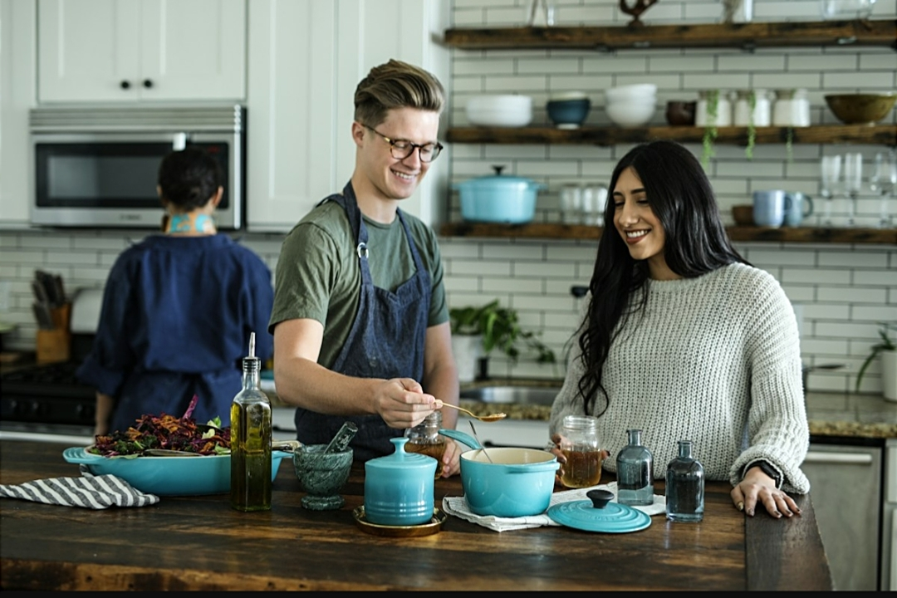

About Us
This site was created by RAI BIKEN (Student ID: 26224053) as a simple guide to everyday healthy eating.
Our goal is to show that wellness does not require complicated diets or strict rules. Small, sustainable habits — choosing fresh ingredients, staying hydrated, and eating mindfully — add up over time.
What we offer
- Easy recipes for beginners and home cooks
- Practical tips for balanced meals
- Simple habits that support long-term health
Our mission
To make healthy eating feel simple, welcoming, and achievable for everyone — starting on your plate.